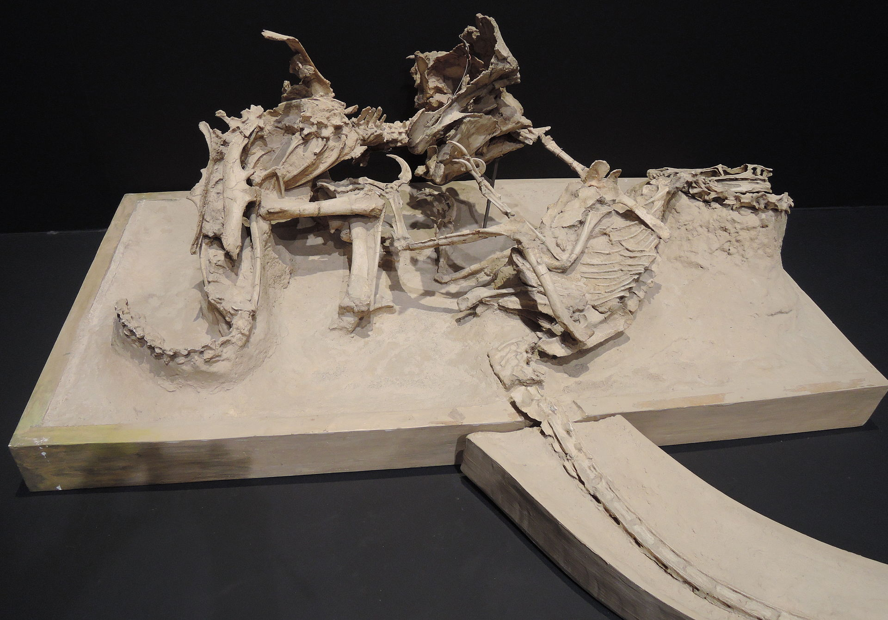

A Extinção: Teoria Mais Aceita
Imagine você, em um período onde não existiam casas, carros, celulares, até mesmo cães. Onde o mundo era completamente diferente do que conhecemos hoje, os continentes eram abissais, os animais? Colossais. Répteis voadores maiores do que qualquer ave que já tivemos o prazer de ver em vida, dinossauros maiores do que uma casa média brasileira, até mesmo as aves eram diferentes. Agora imagine, que em um dia comum neste ambiente assustador, você olha para o céu logo após acordar, como costuma fazer todo dia, mas dessa vez vê algo que vai mudar não somente a sua vida, mas tudo que você já conheceu. Você avista uma bola de fogo rasgando os céus e, com uma colisão ensurdecedora, tudo muda. Em uma fração de segundo, um brilho intenso corta o horizonte, seguido por um estrondo ensurdecedor que quase arranca seus sentidos. O chão treme sob você, como se o próprio planeta estivesse se despedaçando. Segundo depois, você avista tsunamis de dimensões incompreensíveis vindo na sua direção, enquanto bolas de fogo caem dos céus, incêndio, fogo, caos. Isso é, no mínimo, apocalíptico, mas de acordo com a teoria mais aceita sobre a extinção dos dinossauros, foi exatamente assim que tudo aconteceu.
A Teoria do Impacto do Asteroide
Essa é a teoria mais famosa que visa explicar o que aconteceu com o mundo há 66 milhões de anos atrás, quando um asteroide com mais de 10 quilômetros de diâmetro atingiu o que hoje é a península de Yucatán, no México. O asteroide que deixou uma cratera conhecida como Cratera de Chicxulub, com mais de 180 quilômetros de diâmetro, se chocou com o nosso planeta em uma velocidade assustadora, mais rápido do que uma bala. No momento do impacto, uma grande nuvem de poeira se levantou, incêndios começaram por todas as partes do mundo, terromotos inimagináveis e tsunamis com mais de cem metros de altura, mudaram toda a biodiversidade global.
Catalogado em 2024, na Bacia do Recôncavo, no nordeste do Brasil, a descoberta ocorreu a partir da análise de fósseis coletados entre 1859 e 1906. A equipe de paleontólogos observou registros e imagens de materiais encontrados recentemente no Museu de História Natural de Londres e identificou características que comprovavam a existência da nova espécie. Essa região, já conhecida por sua rica biodiversidade, revelou-se também um importante sítio para o estudo dos dinossauros herbívoros do período Cretáceo.
Qual é o impacto dessa descoberta para o estudo dos dinossauros no Brasil?
Este achado não apenas coloca o Brasil no mapa como um campo significativo para a paleontologia mundial, mas também inspira futuras gerações de cientistas brasileiros na exploração de nossa história pré-histórica. A Tietasaura derbyiana abre novas portas para o entendimento da fauna que dominou a região do Recôncavo há milhões de anos, promovendo um renovado interesse pela paleontologia e pela ciência nacional.
Portanto, a descoberta da Tietasaura derbyiana é um lembrete do vasto potencial científico do Brasil e um convite aos pesquisadores para que continuem a explorar e a descobrir os segredos que nossas terras ainda guardam.
Protoceratops versus Velociraptor: Um Confronto Registrado em Fósseis
Um fóssil que retrata uma luta entre um Protoceratops contra um Velociraptor foi encontrado! Estima-se que o confronto aconteceu há 74 milhões de anos atrás, onde hoje é a mongólia e demonstra dois dinossauros lutando pela vida em um deserto. Acredita-se que durante o confronto, ambos os animais foram soterrados por uma duna de areia que colapsou sobre eles, criando um dos fósseis mais incríveis de todos os tempos.
Esse fóssil nos dá uma ideia sobre como o Velociraptor atacava e como o Protoceratops se defendia. O Protoceratops usava seu bico para se defender, mordendo um dos braços do Raptor, além de ser maior e mais pesado, o que dá uma vantagem na luta. Por outro lado, o Raptor tem uma de suas imensas garras curvada bem no pescoço de sua presa, o que é algo claramente fatal.

O fóssil foi encontrado na Formação Djadokhta do Cretáceo Superior da Mongólia em 1971 e sem dúvidas, é um dos achados mais impressionantes da paleontologia.